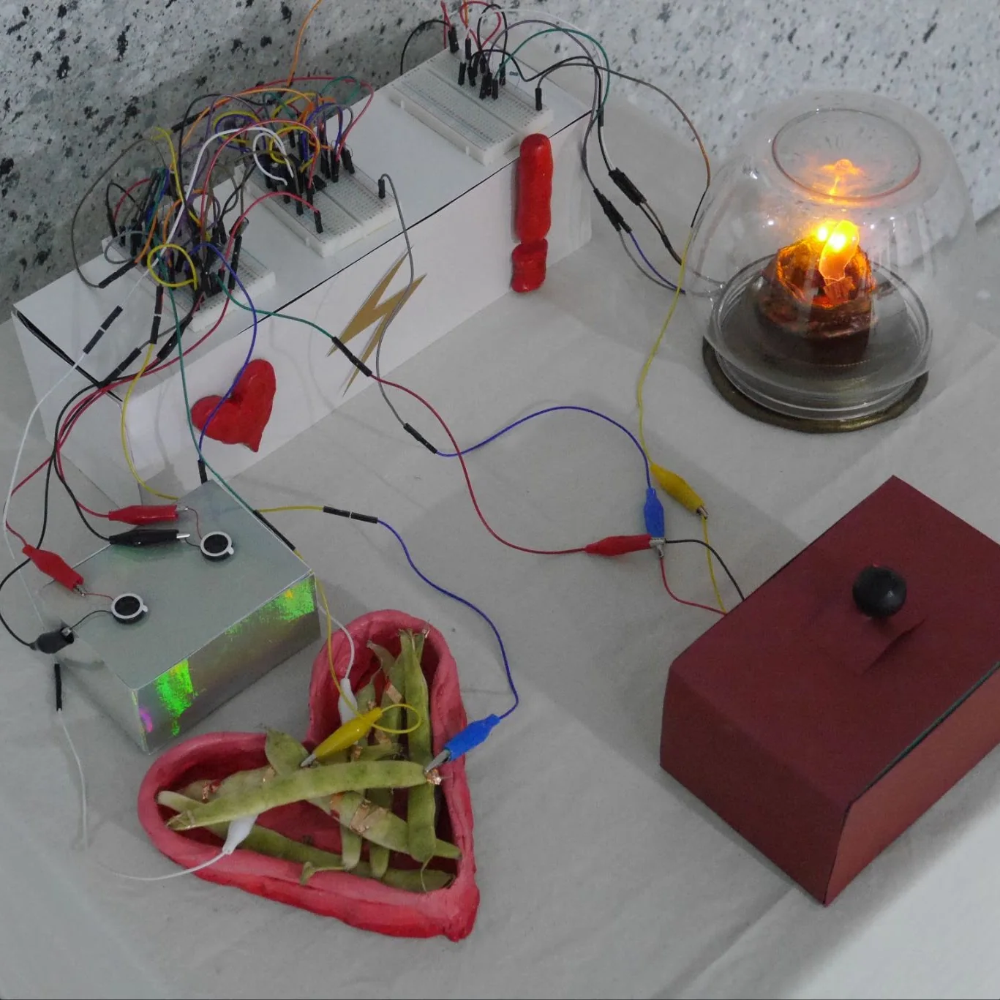
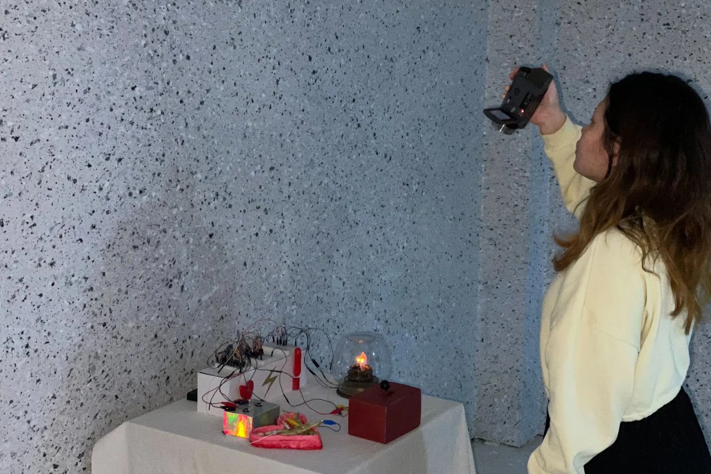
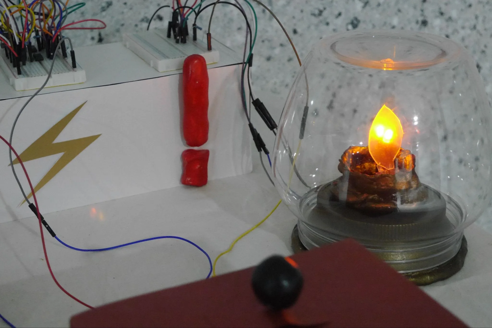
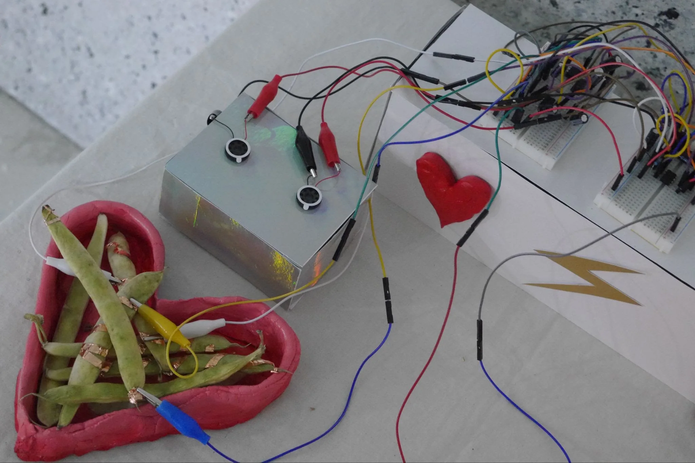
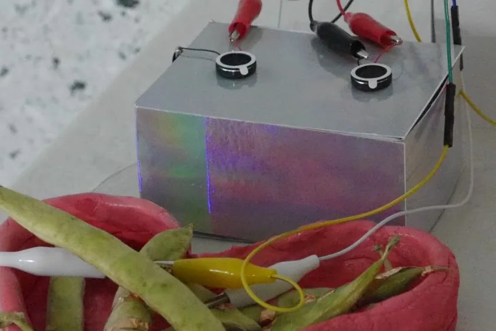
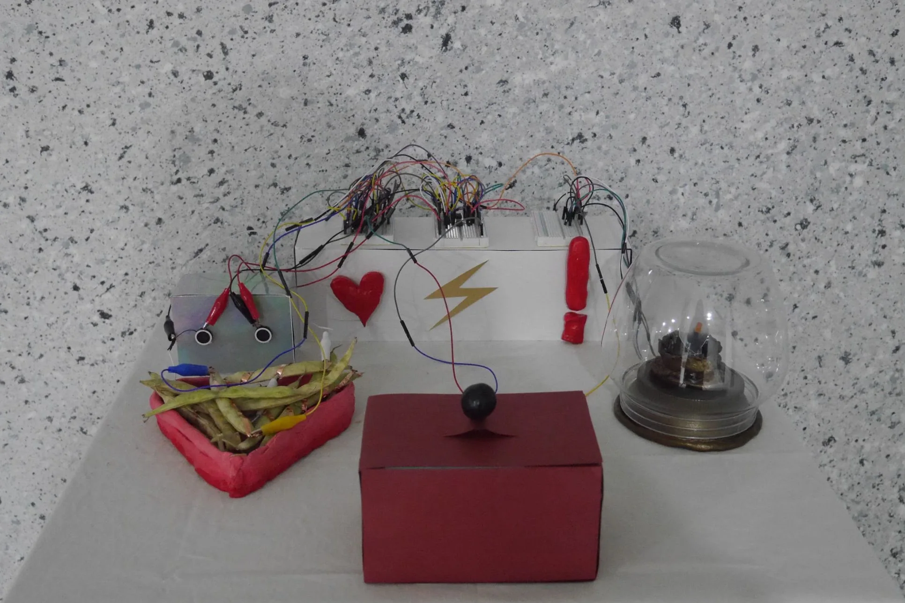
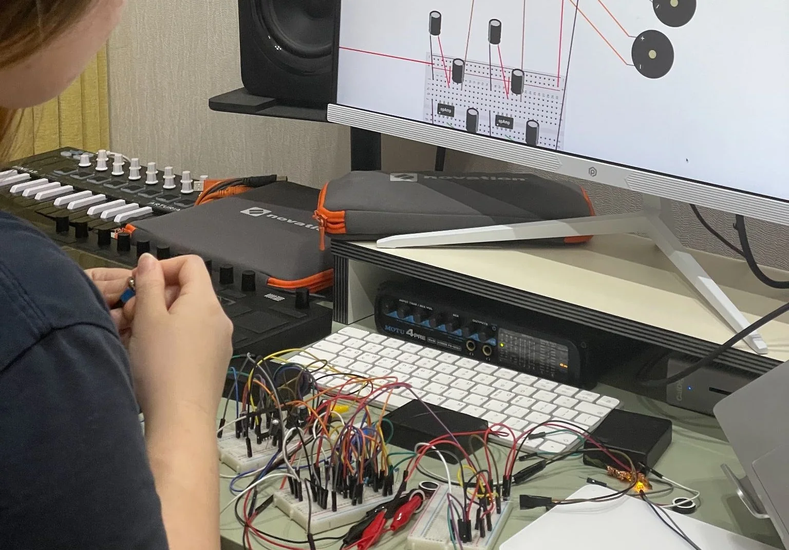
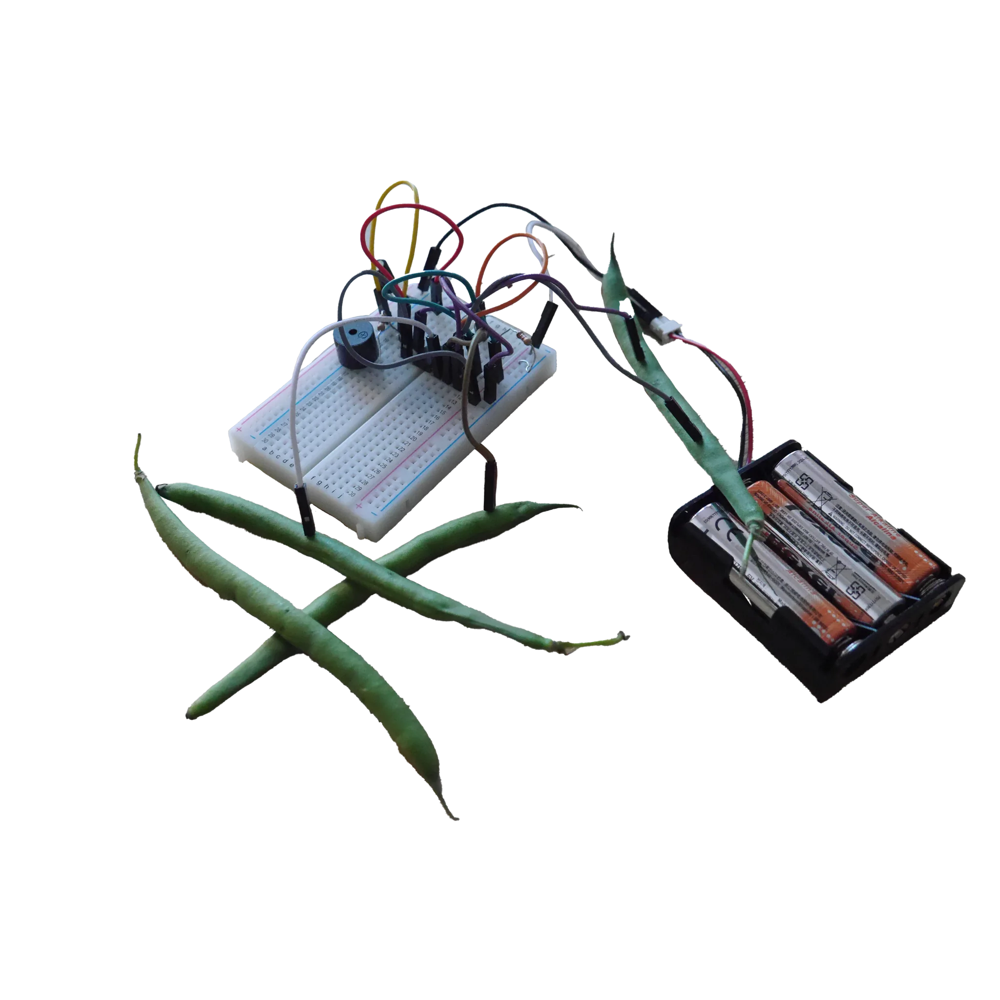
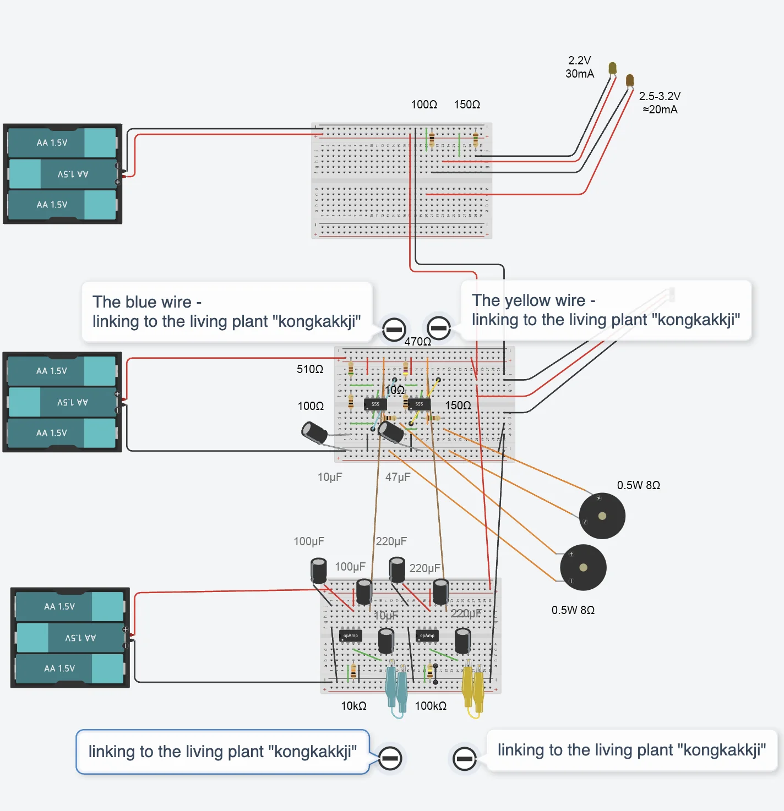
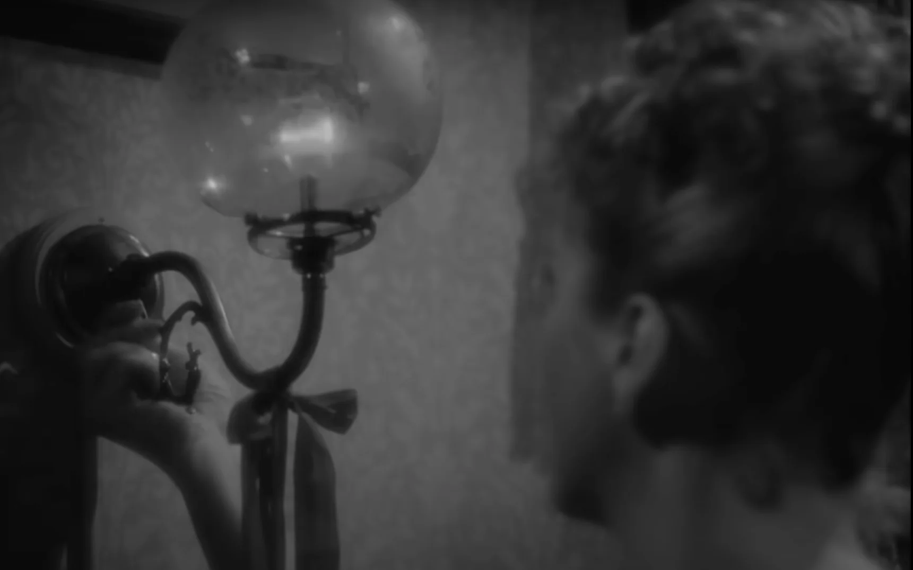

Gaslighting
Exploring the ideation of questioning the terms 'gaslighting' and 'kongkakkji,' this piece examines power dynamics, interplaying between gaslight-inspired light, and sound with signals generated from kongkakkji (s), which can entirely be determined and operated by the participating individual through their interaction with the switch, using their 'power'.
The pulse and frequency of the sound can be interrupted, varied, and stopped by the hands of the participating individual on kongkakkji (s) in the heart-shaped clay plate as a tangible interface. The signs of heart and an affirmation mark respectively indicate love and warning, inviting participants to experience and question the illusory or delusional relation between love and abuse.
This time, I intended to focus on physical computing with a purely hardware-based approach, aligning with the theme of objects representing emotions between humans. Once the singular and basic circuit for the sound was confirmed with the signal interruption from the green beans, I began creating the circuit using Tinkercad. The three breadboards were configured for two LEDs, 555 timers, and LM386N amplifiers.
The gaslight-inspired light, referencing the film Gaslight (1940), was crafted with clay, with a plastic used as a recyclable container. The flame-like plastic, which diffuses the orange and yellow LED lights to resemble the flame of the gaslight, was cut from a disposable spoon. By selecting these casual, everyday materials, I also reflected the increasingly common occurrences of cognitive dissonance in our daily lives within this modernised society.
(Gaslight 50:57)
On the left side where the participant's heart is located, I tried to express the rapid pulse of the heart in auditory form through the frequency of sound from the bean pods, kongkakkji (s). When touched by hands, the sound becomes more electric and intensified, evoking the sensation of an electric shock much like the feeling of love. The eye-like piezo speakers further emphasise the concept of 'kongkakkji,' which is commonly described in Korean as 'wearing kongkakkji on the eyes'. However, the kongkakkji (s) are not located on the eyes, but in the heart-shaped clay plate, since this illusory chemistry is ultimately about love—a love that touches our hearts.








